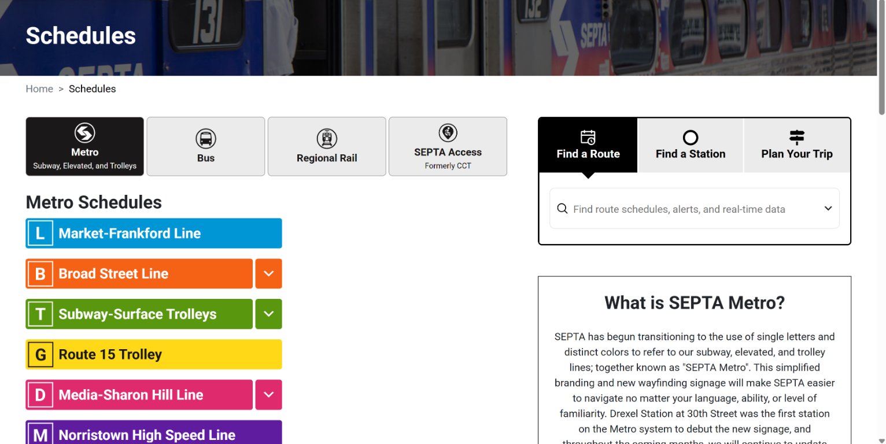
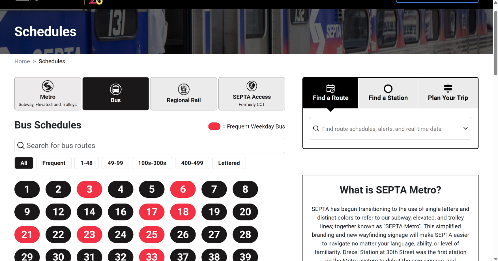
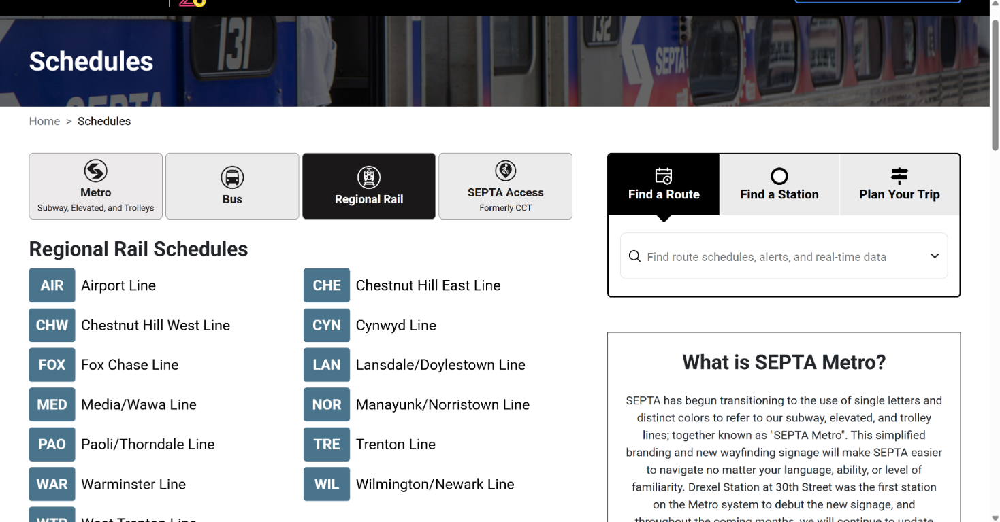
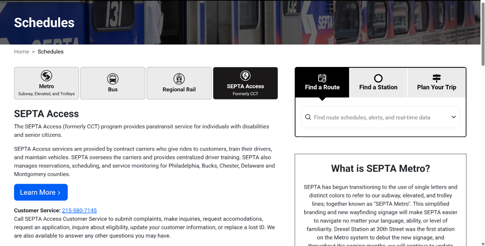

Public-facing interface: https://www.septa.org/schedules?mode=metro
Locating the interaction
Where does a rider find the Schedules buttons on septa.org?
The interaction is the row of Schedules mode buttons. Riders click through them to pick the type of service they want a schedule for.
- Go to septa.org, or open the Schedules page directly at septa.org/schedules.
- From the home page, choose Schedules in the site navigation. On a phone, open the Toggle navigation menu button first.
- On the Schedules page, find the page heading Schedules and the breadcrumb (Home > Schedules).
- Directly below the heading is a row of four buttons, one for each mode of transportation SEPTA publishes schedules for.
Metro
Subway, Elevated, and Trolleys. Selected by default.
Bus
Bus route schedules.
Regional Rail
Regional Rail line schedules.
SEPTA Access
Formerly CCT.
1. Triggers
What event starts the microinteraction?
The microinteraction starts when a rider wants a schedule for a particular kind of service and uses the mode buttons on the Schedules page to get it. It can be started by the rider (manual triggers) or by the page itself (system triggers).
Rider-initiated triggers
Click a mode button
On a desktop or laptop, the rider clicks Metro, Bus, Regional Rail, or SEPTA Access. This is the primary trigger.
Tap a mode button
On a phone or tablet, the rider taps one of the same buttons. The row sits directly under the "Schedules" heading, so it is visible without scrolling.
Keyboard or assistive technology
The buttons are exposed as a tab list. A rider using a keyboard or screen reader can move focus to a button and activate it.
Click through several modes
A rider unsure which mode they need often clicks one button after another, for example Metro, then Bus, then Regional Rail. Each click starts the interaction again.
System-initiated triggers
Arriving on the page
When the Schedules page loads from the home-page navigation or the Metro link, the Metro button is already selected and the "Metro Schedules" panel is showing. The rider's first decision is whether to stay on this default or switch.
Opening a mode link directly
Each click updates the page address (for example ?mode=metro becomes ?mode=bus). A rider who opens a saved or shared link such as septa.org/schedules?mode=metro lands in that mode without clicking.




?mode=bus, and the bus routes appear.2. Rules
What rules determine how the microinteraction behaves?
Rule 1: One mode is selected at a time
The four buttons work as a single-choice set. Exactly one is active, and choosing another one deselects the previous one.
- The active button turns dark (black) with white text. The other three stay light gray.
- Metro is active by default when the page opens.
- Clicking the button that is already active changes nothing.
- A rider cannot select two modes at once or clear the selection.
- The rider's choice is reflected in the page address (for example
?mode=metrobecomes?mode=bus).
Rule 2: The schedule panel matches the selected mode
Whichever button is active decides what appears directly below the row. The heading and the content both change to match it, while the buttons, the page banner, and the "Find a Route" box on the right stay where they are.
- Metro: "Metro Schedules", a list of color-coded lines (Market-Frankford, Broad Street, Subway-Surface Trolleys, Route 15 Trolley, Media-Sharon Hill, Norristown High Speed). Some lines have an arrow to show or hide their routes.
- Bus: "Bus Schedules", a search box for bus routes, filter chips (All, Frequent, 1-48, 49-99, 100s-300s, 400-499, Lettered), and numbered route buttons. Red buttons mark Frequent Weekday Bus routes.
- Regional Rail: "Regional Rail Schedules", a two-column list of lines with three-letter codes (AIR, CHE, CHW, and so on).
- SEPTA Access: "SEPTA Access", a written description of the paratransit program, a Learn More button, and customer service contact details. It has no list of routes.
3. Feedback
What does the rider see, hear, or feel?
What the rider sees
Visual feedback is the main response, and it appears immediately after a click or tap.
- The clicked button flips from light gray (with dark text) to near-black (with white text). This is the clearest sign that the choice registered.
- The button that was active returns to light gray.
- The heading below the row changes to match, for example "Metro Schedules" becomes "Bus Schedules".
- The content under the heading is replaced: colored line bars, a route search with numbered buttons, a list of rail lines, or a text description.
- The address bar updates to show the new mode.
- The banner, the breadcrumb, and the "Find a Route" box on the right do not move, so the rider can tell only the schedule area changed.
What the rider hears
The page makes no sounds of its own. There is no click tone or spoken confirmation.
A rider using a screen reader hears the button name and whether it is selected (for example "Bus, tab, selected"), and can then read the new heading and content.
What the rider feels
There is no vibration or haptic response from the page. The physical feedback comes from the device itself:
- The press of the mouse button, the key, or the touchscreen.
- The pointer changes to a hand when it is over a button, which signals that it can be clicked.
- A quick, short color change (about 0.2 seconds) that feels responsive rather than abrupt.
Emotionally, the rider should feel oriented and in control: they know which mode they are in and that they can switch easily.
4. Loops & modes
What happens when the interaction repeats or conditions change?
These are the meta-rules. They do not change how a single click works (see Rules above). They describe what happens when the interaction repeats, what extra controls sit inside it, and how it adapts to different conditions.
Loops
Loop 1: Switching between modes
The buttons never go away after a choice. The rider can click any of the four buttons again and again, in any order, as many times as they like, and the page never needs a reload.
Metro → Bus → Regional Rail → SEPTA Access → Metro …
Loop 2: Moving back through history
Each mode change adds an entry to the browser history. I tested that the browser's Back button returns to the previous mode, with the matching button selected again. The rider can retrace their steps without clicking the buttons.
Loop 3: Repeating items inside a mode
Within a mode, the same element repeats as a list. Metro shows one colored bar per line, Bus shows a grid of numbered route buttons, and Regional Rail shows a two-column list of coded lines. The rider scans these items to find their own.
Loop 4: Ending the loop
The loop ends when the rider clicks a line, route, or the Learn More button. That choice leaves the mode buttons and opens a schedule or another page.
Additional modules inside the interaction
Show/hide arrows (Metro)
Some Metro lines have a small arrow beside them. Clicking it expands that line to list its routes, and clicking again collapses it. I confirmed it reports an expanded state.
Route search and filter chips (Bus)
Only the Bus mode adds a "Search for bus routes" box and a row of chips: All, Frequent, 1-48, 49-99, 100s-300s, 400-499, and Lettered. All is the starting chip. These narrow the long list of routes without leaving Bus mode.
Frequent Weekday Bus key (Bus)
A red key ("= Frequent Weekday Bus") explains that red route buttons are frequent weekday routes. Black buttons are the others.
Find a Route / Find a Station / Plan Your Trip
A second set of three tabs sits on the right of the page, with a search box. It is separate from the mode buttons and stays the same in every mode, so the rider can search directly instead of browsing.
Modes
Mode 1: Metro (default)
The page opens here when no mode is specified. The content is a list of color-coded lines.
Mode 2: Bus
A large set of routes, so the interaction adds search and filtering to help the rider find one.
Mode 3: Regional Rail
A shorter, simpler list of lines with three-letter codes. There is no search or filter.
Mode 4: SEPTA Access
Not a list of routes. The panel changes to text, a button, and a phone number, because this is a reservation-based paratransit service.
Mode 5: Small screens
The interaction adapts when the screen is narrow. At a phone-sized width, I saw the four buttons stack vertically, one per row, instead of sitting in a single row.